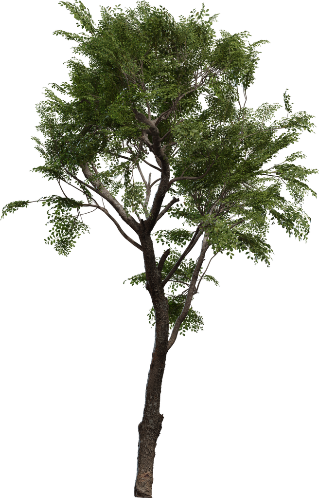
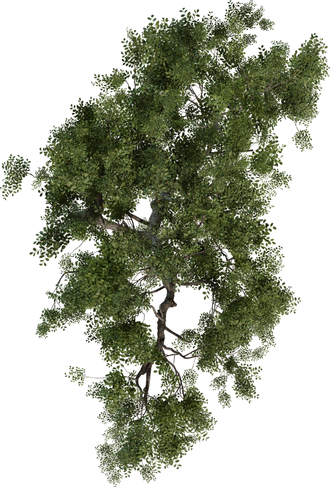

PUTTING LAB / ONE TREE / 2026.10.27
한 그루의 형태와 재질부터
외부 수목 한 그루 시제품 · 품질 승인 전기존 A/B는 같은 자동생성 나무를 사용했고 사용자 품질 기준에 미달했습니다. 이 보고서는 B를 채택 결과로 취급하지 않습니다. 실제 외부 모델 한 종을 내려받아 기존 근접 나무 한 그루만 교체했습니다.
코스에서 직접 비교하기 ↗
자료 구분아래 24개 정지 이미지와 4개 회전 GIF는 실제 PuttingScene의 CPU 참고 렌더입니다. 브라우저 캡처가 아닙니다. Windows 브라우저 도구가 현재 Chrome URL을 확인하지 못해 UI 조작이 중단됐습니다. 실제 브라우저 캡처·React 화면·Android/iOS 실기기 FPS는 미확인입니다.
이미지를 보고 평가한 결과
- 가지 연결: 기존의 반복적인 Y자·굵은 끝단과 끊긴 주가지 대신, 굽은 줄기에서 굵기가 줄어드는 가지와 잔가지가 이어집니다. 근접 구도에서 차이가 뚜렷합니다.
- 수관·잎: 큰 삼각형 잎 다발 대신 잎 윤곽·잎맥·잎자루와 작은 가지 사이 틈이 보입니다. 탑뷰도 불규칙한 실제 입체 수관이며, 고정된 햇빛 아래 회전하면 밝은 면과 그늘이 달라집니다. DPR 1에서 미세 잎 가장자리의 거친 샘플링은 남습니다.
- 껍질: 단색 각기둥에서 원본 색·노멀·거칠기·AO를 가진 껍질로 바뀌었습니다. 줄기 근접 화면에서 색 반점과 표면 결이 보입니다.
- 밑동·그림자: 원본 밑동 중심을 지형에 정렬하고 3.5cm 묻었습니다. 기존 접촉 음영과 실제 메시의 태양 그림자를 함께 사용합니다. 원본은 노출 뿌리망이 없는 잘린 밑동이므로 큰 뿌리가 지표에 퍼지는 외형까지 확보한 것은 아닙니다.
- 남은 품질 차이: 주변 자동생성 수목과 새 나무의 품질 격차가 보입니다. 이번에는 주변 나무·군락 이미지를 교체하지 않았습니다. 한 그루의 형태·재질 개선은 CPU 자료에서 확인되지만 최종 품질 승인과 브라우저 확인은 남습니다.
원본 자산과 이용 조건
| 자산·제작자 | Tree Small 02 · Rico Cilliers / Poly Haven |
|---|
| 라이선스 | CC0 1.0 Universal · 무료, 상업적 사용·수정·재배포 가능. 공식 고지 · CC0 원문 |
|---|
| 배포 파일 | 원본 glTF 2K + BIN + PBR 9장 + 원본 잎 알파 PNG. 각 다운로드의 제공자 MD5 일치 검증. |
|---|
| 원본 형태 | 2,062,487 triangles · 원본 glTF의 실제 높이 4.557m · 가지·UV·노멀 보존. 토폴로지 단순화 없음. |
|---|
| 코스 배치 | x = −11m, z = 27m, y = courseHeightAt. 기존 나무와 높이를 10.420m로 맞추기 위해 2.2867배 균일 확대. 형태 비율은 유지. |
|---|
| 파일 크기 | 111.76 MiB GLB. 한 그루의 품질 확인용 원본이며 다량 배치·본격 성능 최적화는 범위 밖. |
|---|
출처 증빙: 자산 고지 · 원본 URL·체크섬·변환 내역 · 검증 범위와 미확인 항목
제공자의 정면·탑뷰 참고
아래 두 장만 Poly Haven의 원본 소개 이미지입니다. 위 코스 렌더와 구분합니다.


변환과 장면 적용
- 원본 BIN을 바이트 그대로 보존해 GLB에 포함했습니다. 원본 메시의 가지 수·잎 수·랜덤값을 바꾸지 않았습니다.
- 원본 잎 diffuse RGB와 누락된 원본 alpha PNG를 합쳐 RGBA PNG로 저장했습니다. alpha mask 0.45와 MSAA alpha-to-coverage를 사용해 잎과 태양 그림자에 같은 윤곽을 적용합니다.
- 원본 OpenGL normal과 ARM을 유지했습니다. ARM의 R을 AO로 연결하고 강도는 잎 0.65, 목질 0.85입니다. 원본 UV 채널과 KHR_texture_transform을 보존했습니다.
- 기존 여섯 근접 나무 중 한 그루만 교체했습니다. 빛의 방향·색·세기는 유지하고, 태양 그림자 범위를 그린과 대상 수목까지 넓혀 4096 맵을 사용합니다. 두 비교안에 동일하게 적용했습니다.
공·홀·깃발 위치, 외부 궤적 좌표·제공 높이·시간, 퍼팅 평면과 경사 계산, 게임의 기본 카메라는 유지합니다. 비교용 보조 카메라만 추가했습니다. 새 장면의 성능 수치는 측정하지 않았습니다.